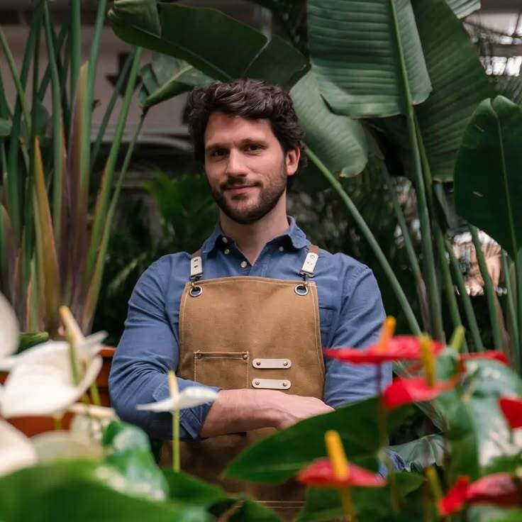

Laura Gómez
Fundadora
Selecciona las mejores plantas del vivero y nos enseña a todos cómo cuidarlas.
Vivero Raíz nació en 2006 como un emprendimiento familiar enfocado en cultivar plantas de interior adaptadas a la vida moderna. Nos apasiona la botánica y buscamos acompañar a cada cliente en el cuidado de su propio espacio verde.
Fundadora
Selecciona las mejores plantas del vivero y nos enseña a todos cómo cuidarlas.

Asesor de Plantas
Te ayuda a elegir las plantas ideales según la luz que tengas en tu balcón o living.
Atención y Catálogo
Mantiene la página web actualizada y controla que siempre haya stock disponible.
Abrimos las puertas del primer vivero físico en Caballito con 40 especies
Incorporamos tecnología de riego controlado para especies que lo necesiten
Lanzamos nuestro catálogo online e intranet de gestión interna.
Alcanzamos empaques 100% compostables para todas las entregas.